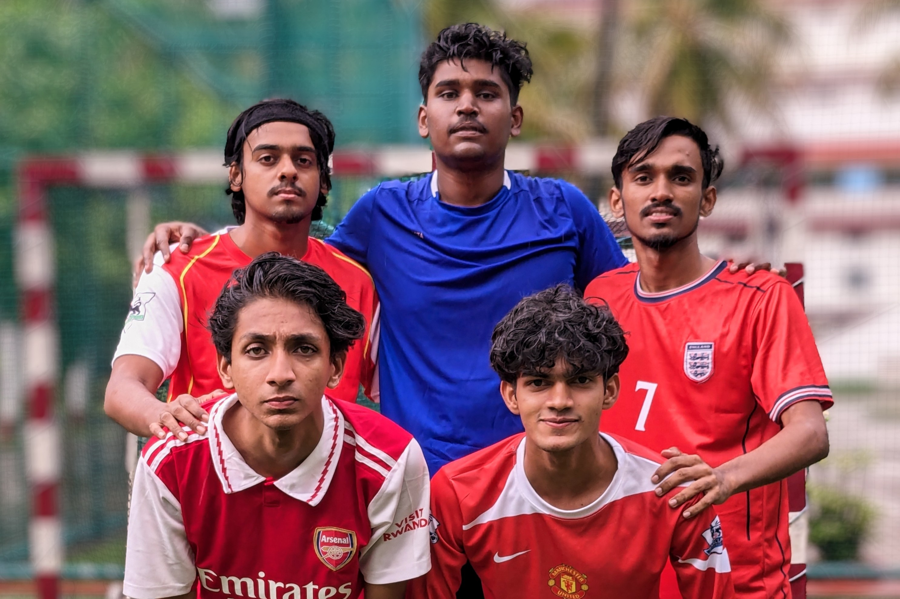
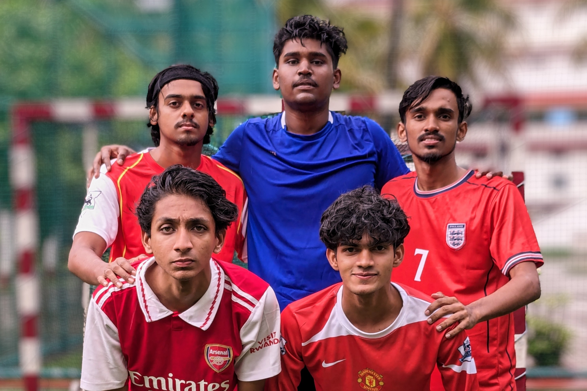
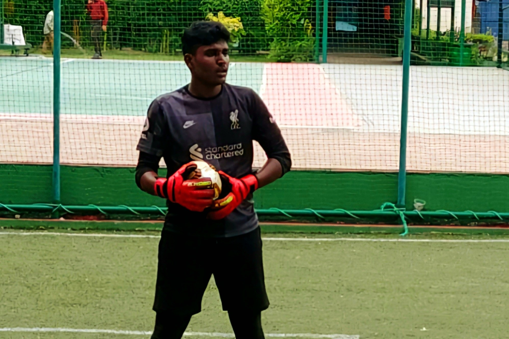
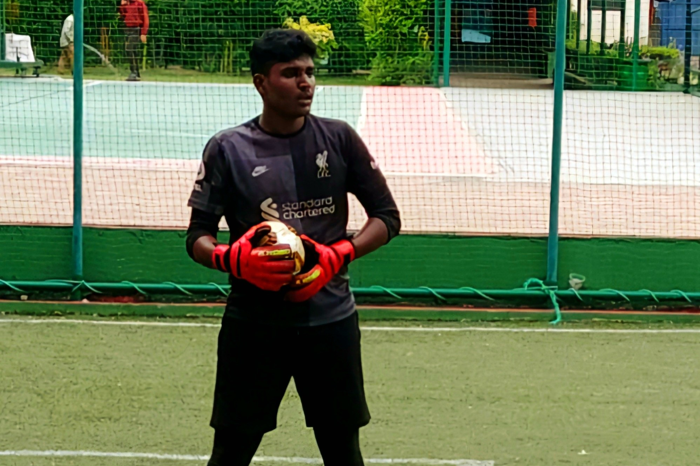

Sports Achievements
Sports Excellence
Football Team Captain | 2024 - Present
Represented the university in two South Zone Inter-University Tournaments and led the team in multiple tournaments, demonstrating leadership, teamwork, and competitive spirit.
 

 
